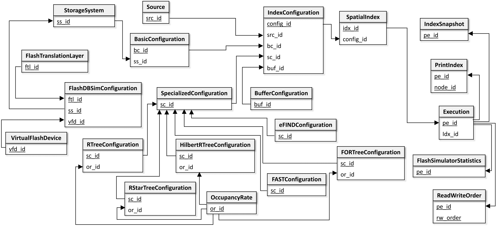

An Overview of the FESTIval's data schema - fds#
The FESTIval's data schema stores information of spatial datasets that can be used by spatial indices, general and specific parameters employed by spatial indices, and statistical data of executed workloads. Collected statistical data can be used in mathematical models to measure the performance of spatial indices, considering employed parameter values, characteristics of the spatial dataset, and the employed storage device.
The figure below provides the logical view of the FESTIval's data schema, called fds. This figure only shows the relationships of the relational tables by showing their primary and foreign keys. Primary keys are highlighted. The relationship between two tables are given by a directed row linking the primary key of a table to the foreign key of another table.

There are two categories of data managed by FESTIval: (i) configuration of a spatial index, and (ii) statistical data of executed workloads.
Configuration of a Spatial Index#
The configuration of a spatial index consists of four components. Each component is shortly described below and is represented by a relational table (see the specification of a relational table by clicking on its corresponding link):
- Source - this table stores data about the spatial datasets that can be used by spatial indices.
- BasicConfiguration - this table stores the general parameters that can be employed by any spatial index. It may includes the specific information regarding the employed storage device as follows:
- StorageSystem - this table describes the storage system that the spatial index should employ. This can be further specialized if the storage system is the Flash-DBSim:
- FlashDBSimConfiguration - this table stores specific parameters of the flash memory emulated by the Flash-DBSim:
- VirtualFlashDevice - parameters of the flash device of the Flash-DBSim.
- FlashTranslationLayer - parameters of the flash translation layer of the Flash-DBSim.
- FlashDBSimConfiguration - this table stores specific parameters of the flash memory emulated by the Flash-DBSim:
- StorageSystem - this table describes the storage system that the spatial index should employ. This can be further specialized if the storage system is the Flash-DBSim:
-
SpecializedConfiguration - this table generalizes the specific parameters of a spatial index. Thus, each specialization of this table represents the specific parameters of a given spatial index. The specialized tables are:
- RTreeConfiguration, which refers to the parameters of the R-tree.
- RStartConfiguration, which refers to the parameters of the R*-tree.
- HilbertRTreeConfiguration, which refers to the parameters of the Hilbert R-tree.
- FORTreeConfiguration, which refers to the parameters of the FOR-tree.
- FASTConfiguration, which refers to the parameters of FAST.
- eFINDConfiguration, which refers to the parameters of eFIND.
Further, these table may use the table OccupancyRate, which stores the minimum and maximum occupancy of nodes.
-
BufferConfiguration - this table stores the parameters of the buffer manager of the spatial index, if any.
FESTIval provides a script named festival-inserts.sql that provides an extensive set of tuples for these relational tables. The default spatial indices included by this script can be downloaded at the wiki page of the FESTIval's Github project. Users are also encouraged to insert new tuples in such tables in order to create new configurations, as needed.
In addition, FESTIval internally manages the following tables that represent a spatial index:
- IndexConfiguration - the combination of the primary key values of the four components creates an configuration for a spatial index to be hanled by FESTIval.
- SpatialIndex - this table represents the spatial index effectively created by the user. Note that different spatial indices can employ the same configuration; however, they can have different contents because of the operations executed in workloads.
Note
Users should not insert new tuples into the tables IndexConfiguration and SpatialIndex because they are internally managed by FESTIval only.
Statistical Data of Executed Workloads#
There are two types of statistical data managed by FESTIval: (i) general statistical data that every index operation can generate, and (ii) statistical data related to the index structure. The relational tables storing statistical data are (see the specification of a relational table by clicking on its corresponding link):
- Execution - this table stores general statistical data related to the execution of index operations like insertions, updates, and deletions.
- ReadWriteOrder - this table stores the order of reads and writes performed on the storage device by the index operations.
- FlashSimulatorStatistics - this table stores statistical data from the flash simulator, if it was used by the spatial index.
- IndexSnapshot - this table stores statistical data related to the structure of the index.
- PrintIndex - this table stores all index pages of the spatial index, allowing users to visualize the structure of the index using a geographical information system like QGIS.
Note
We do not encourage users to change the structure of the tables storing statistical data, as well as we do not encourage to manually insert new values in such tables. Be careful if you really need to modify something (e.g., consider to make a copy of this content in another temporary table).